Tang Nano 9K 调试
更新历史
| 日期 | 版本 | 作者 | 更新内容 |
|---|---|---|---|
| 2023-02-14 | v0.1 | wonder |
|
This is the second article in our series on the Tang Nano 9K, the first section on getting your development environment setup can be found here.
When programming FPGAs or really any embedded system you usually have a lot less visibility into whats going on, in comparison to programming for computers. When everything works its great, but more times then not you won't get your design perfect on the first try and not having this visibility can make it hard to troubleshoot.
In this article we will go through some of the different ways to debug an FPGA project as-well as cover some of the more common issues, so if you do run into an issue you will know how to overcome it. We will also be building a UART module which will use the on-board RV debugger built into the Tang Nano 9K (🔌🔌) to communicate with a computer serially.
Classifying the Type of Bug
To efficiently debug an issue, like in most things, it works best when you use the right tool for the job. Different types of bugs have different tools which can help to find them. From my experience you can usually categorize bugs into three main categories:
- Syntax Errors
- Logic / Implementation Errors
- Integration Errors.
Syntax Errors
This is the type of error where you mistyped, forgot to close a block, misused a verilog feature etc... All these kinds of issues are the least severe in my opinion, as they are brought up during the synthesis stage while compiling your design and you will usually get an exact file and line number. So even if the error message is not that clear, you still have the exact location of the problem which makes it easy to fix. We won't go too much into this type of bugs as like I mentioned you will immediately know about this kind of bug during syntheses - if not before from the editor itself.
Logic / Implementation Errors
Logic errors are the types of errors where you had a flaw in your original design, maybe you forgot to handle edge cases or had a mistake in your original plan.
Implementation errors are the flip-side of this, where your design was actually solid, but the code written doesn't actually do what you intended.
Both these kinds of issues are a bit harder to catch, since you won't receive any error message. The only indication you will have is that your project doesn't work as intended.
In these situations though, we are talking about cases where you understand and know how it is meant to perform. For these cases we can use simulations and visual logic debugging with VCD files to see what our design is doing over time and track down at which stage there is a problem. We will cover both of these method below.
Integration Errors
Integrations errors are errors that occur only when run on the actual FPGA and are usually because of misunderstanding, or not fulling knowing how to interface with another device or a specific protocol.
These types of errors are the most difficult to find as they are due to a 3rd party device or from missing information. For example if we were making an FPGA core which reads from a temperature sensor that has an 8-bit temperature value, if we thought the temperature IC returned a 10-bit value and tried to read that we would get incorrect results. This is especially hard to track down, as if you thought a device was 10-bit instead of 8-bit, you would have also made it 10-bit in the simulator in which case it would have passed.
To find these kinds of issues you need methods to debug the FPGA while it is running, these methods include making use of the on-board LEDs, UART communication during runtime or even logic analyzers / oscilloscopes, we will go over using the on-board LEDs to display data as-well as sending things from the FPGA to the computer over UART.
UART
In-order to use the onboard UART debugger we need to implement our own UART transmitter and receiver modules, which gives us a good test case to go through all the debugging methods listed above.
But before we get into the implementation, let's go over the protocol itself so we understand what we are going to be doing.
The Protocol
With UART you send data from one device to another over a single wire. You send 1 start bit of data, then an agreed upon amount of data bits (usually 8) and finally a stop bit. There are some more complex configurations, like multiple stop bits, or adding a parity bit as a checksum. But in our case we will be looking at the simple case of 1 start bit, 8 data bits and a stop bit. The data is transferred least significant bit first.
Example sending the byte 01010101 or 85 in decimal:
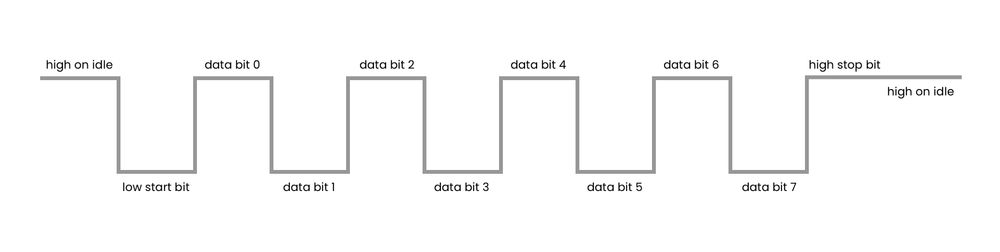
There is no clock signal to synchronize both sides like in some other common protocols here both sides need to agree in advance on a frequency or "baud rate" which is the amount of bits per second and then each side needs to manage their own clocks to meet the desired frequency.
Because there is no common clock, one side cannot react to the "rising edge" for example of the other sides clock, and there may be some drift between the two devices not to mention that they might have completely different clock speeds which don't exactly line up with the baud rate. So because of this we want the receiver to be able to run at least 8-16 times faster then the agreed upon baud rate. That way the "latest" the receiver would realize the transmission started would be an 1/8th or 1/16th of the bit rate in, and so even if there is a drift due to the different clocks, you should still be able to read all 10-bits of the transmission successfully.
The UART on the Tang Nano 9K runs in full-duplex mode which means it uses two lines like the one above, allowing for each to device to both send and receive data at the same time. Other than the direction, the protocol is exactly the same for both directions, there is no single side which acts as the controller or schedules when to send or receive they both can decide to send data whenever they want over the appropriate line.
The Implementation
For this project we will need to connect to the onboard debugger's UART pins, which will transfer the UART data we send it to the computer over USB. So lets start with the constraints file. In a new project let's create a file called tangnano9k.cst
IO_LOC "clk" 52;
IO_PORT "clk" PULL_MODE=UP;
IO_LOC "led[0]" 10;
IO_LOC "led[1]" 11;
IO_LOC "led[2]" 13;
IO_LOC "led[3]" 14;
IO_LOC "led[4]" 15;
IO_LOC "led[5]" 16;
IO_LOC "btn1" 3;
IO_LOC "uart_tx" 17;
IO_PORT "uart_tx" IO_TYPE=LVCMOS33;
IO_LOC "uart_rx" 18;
IO_PORT "uart_rx" IO_TYPE=LVCMOS33;
The clock and leds are the same as in the previous article's counter example. The btn pin is connected to the onboard button so that we can use it for sending data and the rx and tx pins of the uart are pins 17 and 18 from bank 2 of the FPGA. We will receive data from the computer over pin 17 rx and we will send data over pin 18 tx.
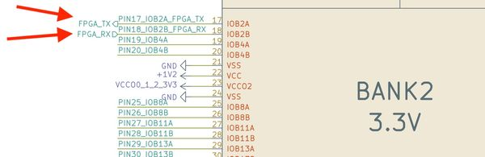
You have to follow their path a bit in the schematic, but you can see that these two pins end up going to the BL702 which is the onboard Sipeed debugger.
Another thing to notice about the buttons is that it is connected to 1.8V on idle through a 10K pull-up, and is pulled low when pressed. So when using it we need to remember it is an active low signal.
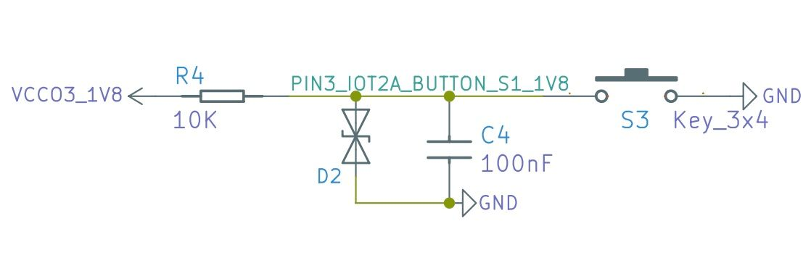
Now that we have the constraints file, lets setup our verilog file uart.v:
`default_nettype none
module uart
#(
parameter DELAY_FRAMES = 234 // 27,000,000 (27Mhz) / 115200 Baud rate
)
(
input clk,
input uart_rx,
output uart_tx,
output reg [5:0] led,
input btn1
);
localparam HALF_DELAY_WAIT = (DELAY_FRAMES / 2);
endmodule
Here we are declaring a new module which receives the clock pin, uart receive and transmit pins, the leds and the button we configured. The brackets that go before the inputs is an optional section where you can define parameters that can be changed by files that use this module. They are like localparams that we used in the previous article just configurable from the outside. In our case we have 1 parameter of this type called DELAY_FRAMES which is the number of clock pulses needed to reach the desired baud rate. In our example we will use one of the standard baud rates of 115200 bits per second, dividing the 27Mhz by this number of bits gives us a number a little higher than 234. So each transmission bit should take a bit over 234 clock pulses.
The thing is we don't really want to measure exactly at the bit transition, because like we saw there can be a bit of drift between the clocks, and we are also not exactly counting the correct number of pulses (we would need an extra 0.375 clock pulses for each bit). The safer option is to read the bit directly in what we consider the middle of the bit pulse, that way if we are a bit early or a bit late in terms of clock pulses we will still fall into the correct bit and read the correct value.
That is why we have another localparam which is simply the full DELAY_FRAMES divided by two so we can get to the middle of these pulses.
Next we will need some registers:
reg [3:0] rxState = 0;
reg [12:0] rxCounter = 0;
reg [2:0] rxBitNumber = 0;
reg [7:0] dataIn = 0;
reg byteReady = 0;
The FPGA doesn't do the same thing every clock pulse like in the example of the counter from the previous article. Here we need to remember where we are in the UART cycle and react accordingly, a common way of doing this is with a state machine. That way we can start in an "idle" state when we see the start bit we can start receiving data and go to the "read data" state and then once we finish the bit we can go to the "stop bit" state finally returning back to "idle" ready to receive the next communication.
The rxState register can hold in-which state we currently are in. Next we know we need to count clock pulses (as we saw 234 clock pulses is 1 UART bit frame) so we have another register rxCounter for counting clock pulses. Next we have rxBitNumber which can keep track of how many bits we have read so far, this way we can know when the data is finished and when we will be moving to the stop bit. The next register is an 8-bit register which will store the byte received, and finally we have byteReady which is a flag register that will tell us when we have finished reading a byte and the value of dataIn is valid to use.
Next let's define which states our state machine will have.
localparam RX_STATE_IDLE = 0;
localparam RX_STATE_START_BIT = 1;
localparam RX_STATE_READ_WAIT = 2;
localparam RX_STATE_READ = 3;
localparam RX_STATE_STOP_BIT = 5;
Like mentioned above, we start in an idle stage, when there is a start bit we need to wait a certain amount of time, then 8 times we can alternate between reading a bit, and waiting for the next bit. Finally we have a state for the stop bit so we can again wait for it to complete and go back to being idle.
I will first show the complete implementation and then we can go through each of the states to explain them:
always @(posedge clk) begin
case (rxState)
RX_STATE_IDLE: begin
if (uart_rx == 0) begin
rxState <= RX_STATE_START_BIT;
rxCounter <= 1;
rxBitNumber <= 0;
byteReady <= 0;
end
end
RX_STATE_START_BIT: begin
if (rxCounter == HALF_DELAY_WAIT) begin
rxState <= RX_STATE_READ_WAIT;
rxCounter <= 1;
end else
rxCounter <= rxCounter + 1;
end
RX_STATE_READ_WAIT: begin
rxCounter <= rxCounter + 1;
if ((rxCounter + 1) == DELAY_FRAMES) begin
rxState <= RX_STATE_READ;
end
end
RX_STATE_READ: begin
rxCounter <= 1;
dataIn <= {uart_rx, dataIn[7:1]};
rxBitNumber <= rxBitNumber + 1;
if (rxBitNumber == 3'b111)
rxState <= RX_STATE_STOP_BIT;
else
rxState <= RX_STATE_READ_WAIT;
end
RX_STATE_STOP_BIT: begin
rxCounter <= rxCounter + 1;
if ((rxCounter + 1) == DELAY_FRAMES) begin
rxState <= RX_STATE_IDLE;
rxCounter <= 0;
byteReady <= 1;
end
end
endcase
end
The UART Receiver States
The first state is the idle state:
RX_STATE_IDLE: begin
if (uart_rx == 0) begin
rxState <= RX_STATE_START_BIT;
rxCounter <= 1;
rxBitNumber <= 0;
byteReady <= 0;
end
end
Here we have nothing to do, we are just waiting for the UART rx line to be pulled low signifying a start bit. If the line has been pulled low, we set the counter to be equal to 1 to include the current "clock pulse" in the UART bit frame and we reinitialize the bitNumber and set the byteReady flag back to zero to signify that the dataIn register should not be used as we are in the middle of reading data to it.
RX_STATE_START_BIT: begin
if (rxCounter == HALF_DELAY_WAIT) begin
rxState <= RX_STATE_READ_WAIT;
rxCounter <= 1;
end else
rxCounter <= rxCounter + 1;
end
We would like to read the data in the middle of each uart bit, so during the start bit we won't wait a complete bit frame and then read, we will wait a half bit frame and then every 1 uart bit (234 clock pulses) we can read so we will be exactly in the middle. Here we are initializing the counter to 1 since registers take an extra clock pulse to update, so we account for that 1 pulse.
RX_STATE_READ_WAIT: begin
rxCounter <= rxCounter + 1;
if ((rxCounter + 1) == DELAY_FRAMES) begin
rxState <= RX_STATE_READ;
end
end
This next stage is merely waiting the 234 clock pulses for the next bit we can read. Since we are already have a half uart bit offset from the previous state we will be in the middle of the signal ready to read after this. Here we are using another method to account for the register delay, we can add 1 when comparing.
RX_STATE_READ: begin
rxCounter <= 1;
dataIn <= {uart_rx, dataIn[7:1]};
rxBitNumber <= rxBitNumber + 1;
if (rxBitNumber == 3'b111)
rxState <= RX_STATE_STOP_BIT;
else
rxState <= RX_STATE_READ_WAIT;
end
In the read state we are clearing the counter to 1, shifting one bit into the dataIn register, incrementing the bitCounter so we can keep track of how many bits we have read so far. If we are already on rxBitNumber 7 or 111 in binary we can go to the stop bit and the entire byte has been read, if not we can go back to the read wait state and wait for the next bit.
This syntax for bit shifting is actually syntax for concatenating bits. You can use it for example to set a register, the order of the bits is from most significant to least significant. So for example if we do the following:
reg [4:0] demo = {1'b1,1'b0,2'b110}
It would store 10110 in binary or 22 in decimal. In our example we are doing the following:
dataIn <= {uart_rx, dataIn[7:1]};
Which means the new bit will be placed as the most significant bit, and then we will take the top 7 bits as the first seven bits, essentially moving them all one over, losing the bit at index 0. Internally this creates what is called a shift-register since the output of the last bit (bit 7) is connected to the input of bit 6, and bit 6's output is connected to the input of bit 5, etc. Since UART sends the data least significant bit first, we shift the bits in from the most significant bit, so that after shifting 8 times it will end up at the other side and be the least significant bit.
RX_STATE_STOP_BIT: begin
rxCounter <= rxCounter + 1;
if ((rxCounter + 1) == DELAY_FRAMES) begin
rxState <= RX_STATE_IDLE;
rxCounter <= 0;
byteReady <= 1;
end
end
The final state is the stop bit state and like the read wait we are simply waiting 234 frames after which we are going back to the idle state and setting the byteReady flag bit to 1.
At this point we should have a working UART receiver, but we wont be able to see that anything is being received. So let's add another always block which will react to the data being ready and display the data (or 6 bits at least) on the leds.
always @(posedge clk) begin
if (byteReady) begin
led <= ~dataIn[5:0];
end
end
This block runs in parallel to the UART receiver and will update the LED's register on every clock pulse that the data is ready. We are inverting because the LEDs light up when a bit is set low.
Testing our Module
Now before running this on the FPGA let's look at the first form of debugging which is simulation and visual logic debugging.
The way we do this is with Icarus Verilog or iVerilog and VCD files. We already set these up along with a plugin for visual studio code allowing us to view them. To get started we need to create another verilog module known as a test bench which will define the simulation. So create another verilog file called uart_tb.v with a new module:
module test();
reg clk = 0;
reg uart_rx = 1;
wire uart_tx;
wire [5:0] led;
reg btn = 1;
uart #(8'd8) u(
clk,
uart_rx,
uart_tx,
led,
btn
);
endmodule
This is a new module named test which simply doesn't receive any outside inputs and instead creates all the inputs that the module we want to test requires and creates an instance of that module. So here we are creating a register for the clock the uart rx and tx pins the wires and the button.
This isn't always true but as a general rule of thumb I use registers if it is an input into the module to drive the value and if it is an output I use a wire as the module itself will drive the value.
You can also see that we are defining an override for the DELAY_FRAMES parameter. The #() is for the parameters and we don't want to actually need to look at 234 frames of clock pulses in our simulation so I lowered it to 8 clock pulses.
Next we need a way to simulate the clock signal. This can be done like follows:
always
#1 clk = ~clk;
The #number (#1) is a special simulation syntax from iverilog that allows us to delay something by a certain number of time frames. By saying each time interval the clock alternates, we are saying the clock cycle is 2 time units (1 high cycle and 1 low cycle is 1 clock cycle). So this loop will wait 1 time unit and toggle the clock register.
The next simulation specific feature I want to go over is the $display and $monitor commands. They are similar to a printf or console.log where they print out a string optionally injecting variables into it. The difference between display and monitor, is that display will only print the value out once, monitor will print it out, and then reprint it out any time the value changes.
So to simulate the UART transmission we can do the following:
initial begin
$display("Starting UART RX");
$monitor("LED Value %b", led);
#10 uart_rx=0;
#16 uart_rx=1;
#16 uart_rx=0;
#16 uart_rx=0;
#16 uart_rx=0;
#16 uart_rx=0;
#16 uart_rx=1;
#16 uart_rx=1;
#16 uart_rx=0;
#16 uart_rx=1;
#1000 $finish;
end
We start by printing a message, then we track the values of the leds and inject their value by using the %b which means print the binary representation of this field, we could have also used %h for hex representation %d for decimal and %s for string representation, among others.
After that we send the start bit by pulling the line low, then send 8 data bits and finally the stop bit. We delay by 16 time frames or 8 clock cycles as that is what we set DELAY_FRAMES to be.
$finish stops the simulation, so after 1000 more time frames we stop the simulation.
For visually debugging the logic we can add another block to dump a VCD file.
initial begin
$dumpfile("uart.vcd");
$dumpvars(0,test);
end
$dumpfile chooses the name of the file, and $dumpvars choosing what to save and how many levels of nested objects to save. By sending 0 as the number of layers it means we want all nested layers (which will include our uart module), and by sending the top module test it means store everything and all child wires / registers.
To run this now we need to run in a terminal from the project directory:
iverilog -o uart_test.o -s test uart.v uart_tb.v
vvp uart_test.o
The first one generates a simulation based on the verilog files we sent it, the -s sets what is the top or main module being run and -o sets the simulation executables name. Ones finished we can run the simulation with the second line and it will produce the following output:
Starting UART RX
VCD info: dumpfile uart.vcd opened for output.
LED Value xxxxxx
LED Value 011110
We can see it creating the VCD file as well as printed our message and the state of the led register. The initial value is xxxxxx because we did not initialize it, and x represents an unknown value. Once the full byte has been read in, the register gets updated with the inverted value of the first 6 bits.
Simulation-wise our program looks good, now let's take a look at the VCD file. Opening it in Visual Studio Code once you have the plugin installed will open up a UI that looks something like the following:
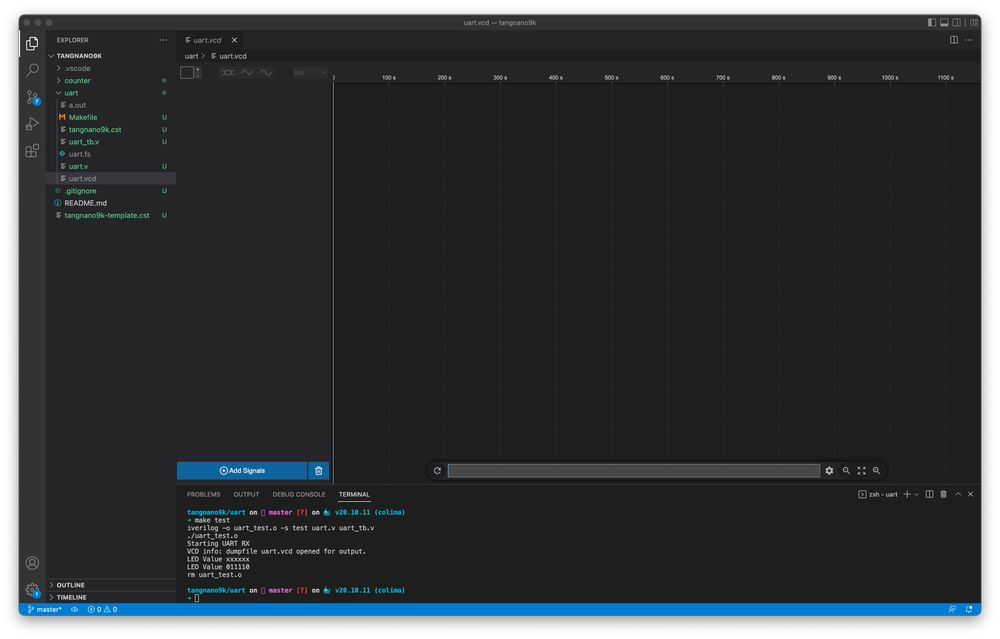
By clicking on "Add Signals" you can add any of the wires or registers to the UI. In-our example let's add the clock, uart_rx wire, rx state and led value. Once added you should have something like the following:
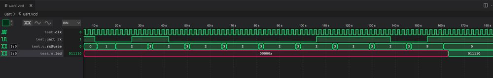
If we zoom in on the start bit and first data bit:
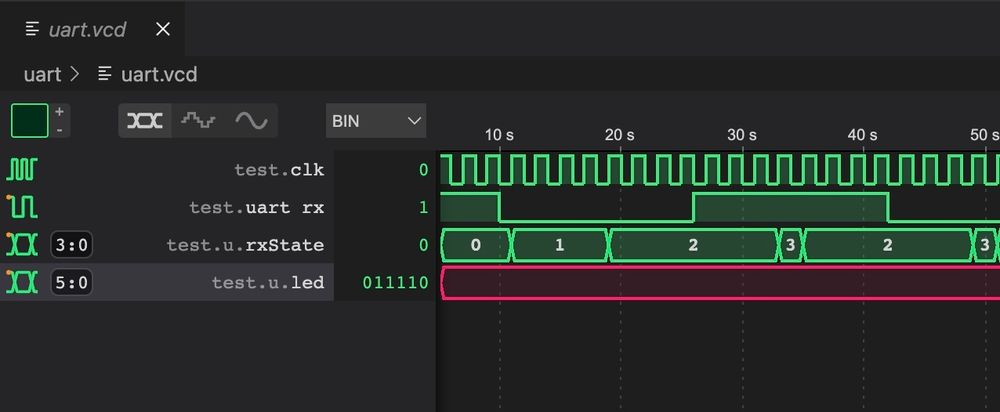
We can see the state starts in idle, One clock cycle after we go to the start bit state where we wait the remainder of the first half cycle. Since we defined each uart bit to take 8 clock cycles we wait here for 4 clock cycles and move to the read-wait stage. There we wait the full 8 clock cycles and move to read a bit, going back to the read-wait stage one clock cycle later.
From the simulation it looks like our module is working. But if we had an issue, for example we forgot to clear the counter in the read state. We would see that after the first bit was read we would never leave read wait stage.
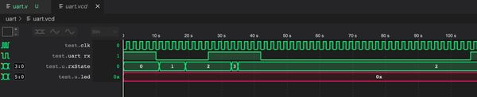
Or if we made the counter too small for example:
reg [1:0] rxCounter;
which can only store up to the number 3, if we needed it to count to 8 it wouldn't be able to:
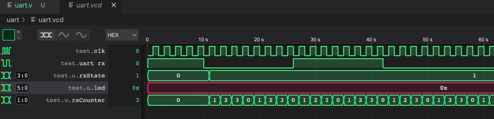
In both of these cases taking a look at the rxCounter we would see something going on, like here we can see that the register rolls over back to 0 after 3 since there are no more bits and as a result we get back stuck in the start bit state.
This is also why you should also test your module with the real values. We changed DELAY_FRAMES to 8 to make it easier to follow step by step. But to make sure we don't have this problem with register sizes we would need to also test with the correct settings.
Now to run it on the Tang Nano 9K, lets create a makefile to make it easier:
BOARD=tangnano9k
FAMILY=GW1N-9C
DEVICE=GW1NR-LV9QN88PC6/I5
all: uart.fs
# Synthesis
uart.json: uart.v
yosys -p "read_verilog uart.v; synth_gowin -top uart -json uart.json"
# Place and Route
uart_pnr.json: uart.json
nextpnr-gowin --json uart.json --freq 27 --write uart_pnr.json --device ${DEVICE} --family ${FAMILY} --cst ${BOARD}.cst
# Generate Bitstream
uart.fs: uart_pnr.json
gowin_pack -d ${FAMILY} -o uart.fs uart_pnr.json
# Program Board
load: uart.fs
openFPGALoader -b ${BOARD} uart.fs -f
uart_test.o: uart.v uart_tb.v
iverilog -o uart_test.o -s test uart.v uart_tb.v
test: uart_test.o
vvp uart_test.o
# Cleanup build artifacts
clean:
rm uart.vcd uart.fs uart_test.o
.PHONY: load clean test
.INTERMEDIATE: uart_pnr.json uart.json uart_test.o
This is very similar to the previous makefile we made, just with the added target to test using iverilog and also a target called clean which will delete some of the artifacts.
So you can run make load to program the Tang Nano and then we should be able to view the data being sent to it over the LEDs. To open a serial terminal we can use tabby.
Under the settings, if you go to "Profiles & Connections" under the advanced tab and select "Serial", we can define the settings for our device:
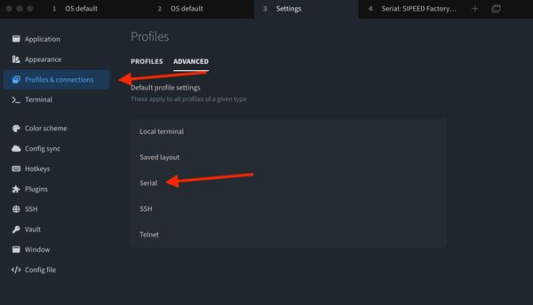
We need to select the serial device since the Tang Nano has two, 1 for JTAG and 1 for UART (which is usually the serial device with the higher number).
Inside we need to also set the baud rate which we said is 115200
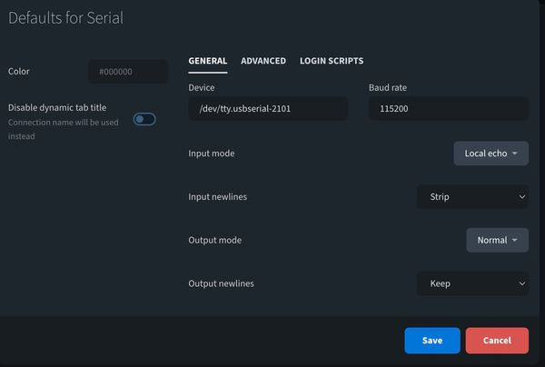
I also turned on Local echo so it will also print what we type, under the "Advanced" tab here we can see that there is 1 stop bit and 8 data bits.
You can save this configuration and then under the profiles tab you can run the profile for the serial device chosen. You should see that you are connected and by pressing keys on the keyboard you should see the LEDs update.
Transmitting Data
Sending data is even more powerful in debugging since we can send things happening at runtime to a serial terminal to gain visibility. For example in our case, you can send back what you think you received over UART, if we saw bits being repeated, or bits missing we could know that the baud rate is too slow or too fast accordingly. Also very handy for dumping memory or sensor values when interfacing with other devices.
The transmit side is very similar to the implementation of the receiver we did above, except that we don't want to count from the middle of the pulse, the transmit side has to change the line at the beginning of each bit frame.
Let's start by adding some registers for the transmit side:
reg [3:0] txState = 0;
reg [24:0] txCounter = 0;
reg [7:0] dataOut = 0;
reg txPinRegister = 1;
reg [2:0] txBitNumber = 0;
reg [3:0] txByteCounter = 0;
assign uart_tx = txPinRegister;
localparam MEMORY_LENGTH = 12;
reg [7:0] testMemory [MEMORY_LENGTH-1:0];
Like on the receiver side, we have a register to keep track of the tx state machine, we have a register for counting clock cycles. dataOut stores the byte being sent currently and txPinRegister is just a register to store the current value that should be attached to the uart_tx pin. The last two registers keep track of which bit we are currently sending, and the next is for which byte.
In our example we will be sending a message from memory, so we need to keep track of the current byte. The assign statement connects the uart_tx wire to the register we created and the last two lines define a new "memory" where each cell is 8 bits long, and in our example we have 12 total cells.
initial begin
testMemory[0] = "L";
testMemory[1] = "u";
testMemory[2] = "s";
testMemory[3] = "h";
testMemory[4] = "a";
testMemory[5] = "y";
testMemory[6] = " ";
testMemory[7] = "L";
testMemory[8] = "a";
testMemory[9] = "b";
testMemory[10] = "s";
testMemory[10] = " ";
end
This next code initializes the memory. There are also verilog commands that load in memory from a file, so when working on bigger memory blocks instead of initializing one byte at a time we could read it all from a binary or hex file, we will explore this more in a future article.
Next let's define the states of our state machine. We don't have an extra "wait" stage here, again because we are not offsetting to the middle of the frame like when reading. We do have an extra stage at the end to debounce the button, since we will be using the button to determine when to send data.
localparam TX_STATE_IDLE = 0;
localparam TX_STATE_START_BIT = 1;
localparam TX_STATE_WRITE = 2;
localparam TX_STATE_STOP_BIT = 3;
localparam TX_STATE_DEBOUNCE = 4;
The Transmit States
TX_STATE_IDLE: begin
if (btn1 == 0) begin
txState <= TX_STATE_START_BIT;
txCounter <= 0;
txByteCounter <= 0;
end
else begin
txPinRegister <= 1;
end
end
The idle state waits for the button to be pressed (which will make it go low) at which point we will move to the start bit state. If the button is not pressed we set the uart_tx to be high as in UART we have a high idle state.
TX_STATE_IDLE: begin
if (btn1 == 0) begin
txState <= TX_STATE_START_BIT;
txCounter <= 0;
txByteCounter <= 0;
end
else begin
txPinRegister <= 1;
end
end
The start bit is a low signal for DELAY_FRAMES, once reached we put the next byte we need to send into dataOut and reset the txBitNumber back to 0.
TX_STATE_WRITE: begin
txPinRegister <= dataOut[txBitNumber];
if ((txCounter + 1) == DELAY_FRAMES) begin
if (txBitNumber == 3'b111) begin
txState <= TX_STATE_STOP_BIT;
end else begin
txState <= TX_STATE_WRITE;
txBitNumber <= txBitNumber + 1;
end
txCounter <= 0;
end else
txCounter <= txCounter + 1;
end
The write state is very similar, except instead of setting the tx pin to low, we set it to the current bit of the current byte. When the frame is over we check if we are already on the last bit, if so we go to the stop bit state, otherwise we increment the bit number and keep the current state of TX_STATE_WRITE.
TX_STATE_STOP_BIT: begin
txPinRegister <= 1;
if ((txCounter + 1) == DELAY_FRAMES) begin
if (txByteCounter == MEMORY_LENGTH - 1) begin
txState <= TX_STATE_DEBOUNCE;
end else begin
txByteCounter <= txByteCounter + 1;
txState <= TX_STATE_START_BIT;
end
txCounter <= 0;
end else
txCounter <= txCounter + 1;
end
The stop bit is a high output bit, after waiting DELAY_FRAMES we check if there are any other bytes to send, if there are, we go back to send another start bit and the cycle will repeat for the next byte. If not we go to the debounce state.
TX_STATE_DEBOUNCE: begin
if (txCounter == 23'b111111111111111111) begin
if (btn1 == 1)
txState <= TX_STATE_IDLE;
end else
txCounter <= txCounter + 1;
end
Here we are just waiting a minimum time (about 10 ms) on top of the sending time, and making sure the button is released after this time. This is to ensure that for each button press we only get one transmission event.
Press on "FPGA Toolchain" > "Build and Program" or Run make load to reprogram the Tang Nano 9K and reopen the serial terminal. You should see that every time you press the button the FPGA should send the message we stored in memory over UART.
For sending data that isn't ascii, you have a few options, the first being you can setup in tabby to print the data out in hex, and then manually decode it, or you can convert the data on device. So for example you can have another module which takes a number and converts it into text by encoding each digit into ascii. As to not make this article too long, we will cover these conversion methods in another article.
Interacting Programmatically
Serial terminal is great for quickly debugging or viewing data, but sometimes you need some processing on the data on the computer side, or you may just want to use the UART to communicate / control an application on one of the sides. To do this we need to open the serial port programmatically. We will be looking at a simple javascript example using node.js and the serialport library.
To install the library run the following from a terminal in your project directory:
npm i serialport
This will install the library we can then create a test script to print out the serial devices it sees, so create a file for example called list-devices.js:
const {SerialPort} = require('serialport');
SerialPort.list().then(console.log);
and then you can run it with node list-devices.js you should see something like the following:
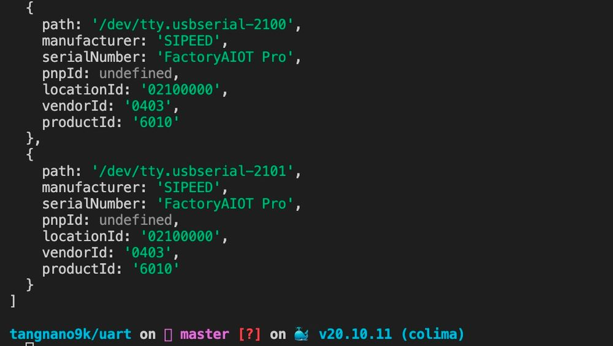
With the path for the device we can write a simple program to interact with the tang nano:
const {SerialPort} = require('serialport');
const tangnano = new SerialPort({
path: '/dev/tty.usbserial-2101',
baudRate: 115200,
});
let counter = 0;
tangnano.on('data', function (data) {
console.log('Data In Text:', data.toString());
console.log('Data In Hex:', data.toString('hex'));
const binary = data.toString().split('').map((byte) => {
return byte.charCodeAt(0).toString(2).padStart(8, '0');
});
console.log('Data In Binary: ', binary.join(' '));
console.log("\n");
counter += 1;
tangnano.write(Buffer.from([counter]));
});
We start by importing the library, then we initialize our device by sending the correct path and baud rate.
Next we initialize a counter variable which we will use to count the number of transmissions.
The next block will run every time there is a new message from the tang nano over the serial port. In this example we will simply print out the data in multiple formats as an example, and the final two lines increment the counter and send it to the tang nano.
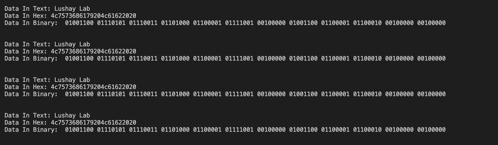
Running the script with you should something like the above, also see every time you press the button the LEDs count up in binary since they are connected to the byte being sent over UART and we are sending the counter. To exit the application you can press ctrl-c which will stop the process to regain control over the terminal.
Conclusion
In this article we created our own UART module and went over some common issues and debugging methods. In the next article we will take a look at using a screen as another method of displaying data or relaying information from the FPGA.
For those that made it this far I would like to thank you, and I hope you enjoyed reading. As always the code is available here(github). And if you have any questions or comments feel free to leave them below or contact me on twitter @LushayLabs.